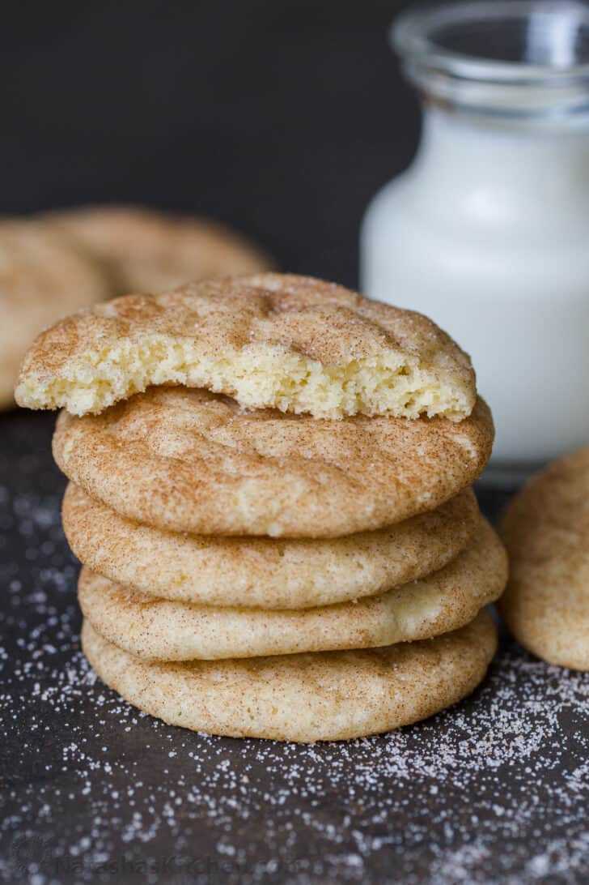

Snickerdoodle Cookies

Ingredient List
Servings: 30 cookies
- 1 cup unsalted butter , (softened at room temperature)
- 1 1/2cups granulated sugar
- 2 large eggs
- 2 tsp vanilla extract
- 2 3/4 cup all purpose flour
- 1 1/2tsp cream of tartar
- 1/2 tsp baking soda
- 1/4 tsp salt
Cinnamon-Sugar Coating
- 1/3 cup granulated sugar
- 2 Tbsp cinnamon
Instructions
- Combine butter and sugar in the bowl of the stand mixer fitted with a paddle attachement.
Beat on medium/high speed until the mixture is fluffy (about 5 minutes).
- Add in vanilla extract and eggs. Continue beating until well combined (about 2 minutes).
- In a separate bowl whisk together flour, salt, baking soda and cream of tartar.
- Add your dry ingredients into the butter mixture. Stir until well combined.
Cover dough with plastic wrap and let it rest for 20 minutes in the refrigerator.
- In a separate bowl, combine 1/3 cup sguar and 2 Tbsp cinnamon.
Form equal-sized dough balls and roll each one generously in the cinnamon-sugar mixture.
- Place cookies on a baking sheet and press down the center slightly to create an even top.
Bake at 350F for 8-10 minutes until the edges are lightly golden. Let cookies rest a few minutes before serving.